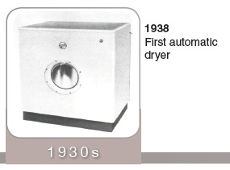
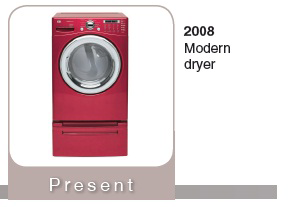

“Wherever the air is exiting the drum is where you will find the lint filter. As the air flows through the filter it traps the lint that is broken down from the wash and dry function. Lint accumulation and reduced airflow both contribute to conditions ripe for a fire. Lint is a highly combustible material, which, interestingly enough, is one of the ingredients in a recipe for homemade fire starters. Very few people realize the importance of clothes dryer fire prevention. However, according to the U.S. Consumer Product Safety Commission, there are an estimated 15,500 fires, 10 deaths, and 10 injuries annually due to clothes dryer fires. One in every five house fires are contributed to the dryer. Several hundred people a year are also subjected to carbon monoxide poisoning from improper dryer venting. A number of dryer vent problems contribute to this. Lint is the biggest culprit. As you know, from cleaning out your lint filter, dryers produce very large quantities of lint. Most people assume their lint traps catch all the lint, and that all they need to do is clean them out after each load. However, a significant amount of this lint is not caught by the lint trap and builds up inside the dryer—even on the heating element. So do yourself, and me, a favor and keep up with your dryer maintenance!”
“Operating thermostats are usually located wherever the air is exiting the dryer drum. If the air moves from back to front, the operating thermostat is usually in the front under the lint filter area. If the air moves from left to right or right to left, the operating thermostat is usually located on the blower wheel housing. There can be several operating thermostats depending on the amount of cycles the dryer offers and normally range from 120 degrees to 160 degrees. Newer dryers, because of the awareness of fire hazard, can also have a thermal fuse located in the same area as the operating thermostat which shuts the dryer down if the air temperature exceeds the safe limits. I got my thermal fuse right after the incident with my cousin, Dryfus. His owners got him all ‘fired up’ one night--workin’ him too hard and not properly maintaining him. Older dryers usually only had one cycle using only one operating thermostat. Now dryers have many different cycles including having moisture sensors that cycle the heat element according to the amount of moisture in the air within the drum.”
“ Safety thermostats will always be located near the source of the heat. As the air passes over the heat source if the safety thermostat senses it is already over 220 degrees (varies in temperature) it will cycle the heat element off until it has reached a cooler temperature, then allowing the heat to come back on. Older dryers did not have safety thermostats and newer ones can have multiple safety thermostats. There can also be a thermal fuse located in this same area in case the safety thermostat should fail, again shutting the dryer off. The operating and safety thermostats will reset themselves once the temperature cools, but a thermal fuse or thermal cutout is a one time blow and must be replaced for the dryer to operate again.”
“The door switch is always located somewhere on the body of the dryer where the closed. It is a simple switch that stops the operation of the dryer when you open the remove the clothes without them tumbling out onto the floor.”
“ Dryer timers , like the washer, have gone from mechanical to the new electronic control board. Even allowing the washer to communicate to the dryer on the type of cycle needed on the upcoming load.”
“Alright, so the next time you pull those clothes out of the dryer all warm and toasty, you will know exactly how they got that way (and how hard we have to work to get them that way)!”